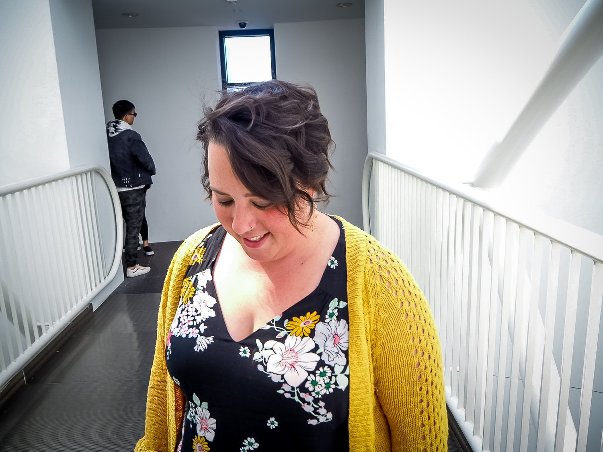

BY CAPRICE APPLEQUIST
Loneliness is an epidemic in San Francisco. I have never met anyone living here who has not struggled with it. For me, loneliness became a part of my lifestyle. A large part of that is because I do most of my work independently as a minister. I have learned how to be okay working by myself, but it wasn’t really by choice.
Things became especially difficult last year. By September, I experienced the loss of nine close friends who moved out of San Francisco. I know I’m not alone in these experiences in a city that is so transient. Most of my prayers in the fall were asking God if I could just please leave this city where I felt so alone. My plan was to finish up some things and move out of the Bay Area by March. At that point, I was planning to quit everything here and move to Illinois to live in my best friend’s basement. It’s true. You can ask her. I dreamed about getting rid of all my responsibilities and living with one person I knew I could count on.
Everything changed on September 13th. That was the day I learned about the UCDTS (Urban Community Discipleship Training School) at YWAM. A couple of people felt God telling them to talk with me about it, so they did. Before that moment, I knew nearly nothing about YWAM. When my friend initially told me about the program, my immediate response was, “No offense, but I don’t need more training.” Keep in mind at this point in my life I had an undergrad degree in ministry, an M.Div, and currently finishing up training as a spiritual director. Do I need a discipleship training school? No thank you.
That night I could not resist the clear calling from God to think about this as an actual option--to not just write it off. In the following week, I called friends and mentors to tell them about this clearly ridiculous idea. Every last one of them said, “This might be a good fit for you. It might be exactly what you’ve been wanting and needing.” I went to God and laid out many of my complaints and the list of negatives, including that this was going to cost me about $300 more a month for rent. I told Him how frustrated I felt that my life couldn’t have some consistency or just stay the same for at least a few months. He replied that this is an 11-month program. Was that enough stability for me? God gets a little snarky with me sometimes. It’s my heart language.
Three weeks later I moved into the YWAM base. I moved from the beautiful and quiet Sunset neighborhood to the loud, urban Tenderloin neighborhood. I still can’t believe I made that decision so fast. As I prayed through it, one of the clearest invitations I sensed from the Lord was to learn things that I could only learn in the context of community. He taught me so much in these past few years of intense loneliness and solitude. I had wonderful times of fellowship with Him, and I learned to work full-time as a minister in the city; yet, I am clearly a novice to the lessons available from living in a close community.
I’m happy to report that it’s been a positive experience--challenging, but so good. There is a part of my heart that has been so thirsty for an intimate community but finding that in SF has felt impossible. Now community isn’t a choice. Having a roommate means I literally can’t hide. Eating most of my meals with people makes it harder to hide when I’m having a bad day, or struggling with the sadness and anxiety that is a part of my life. If I need to cry, I probably won’t get to do that alone. Thankfully, if I want a good laugh, I don’t have to do that alone either. What’s fun is that in this community we see that everyone is deeply flawed, but we’re all committed to staying here. So if I’m annoyed with people, I don’t get to avoid them. I have to see them every day.
One of the best surprises of this move has been finding like-minded people to work with. A part of my job is building peaceful and productive connections between the Muslim and Christian communities in SF. Here at YWAM, I have two other women excited to explore what that looks like with me. There are no words to explain how wonderfully different it is to pray through plans with two other people versus praying through plans alone. This is just one of the many ways God has answered the prayers of my heart by calling me to this community.
Community is never easy. People are deeply flawed. I know I come into any community with all kinds of expectations that stem from my deep brokenness. I’m learning that my struggles to understand my beloved identity as a child of God inherently challenges my ability to practice Christian community. Henri Nouwen puts it well when he says that community isn’t two lonely people coming together. Rather it’s two beloved people of God recognizing each other’s belovedness. He writes in Spiritual Direction, “Community is solitude greeting solitude: “I am the beloved; you are the beloved; together we can build a home or place of welcome together.”
If I spend my whole year of UCDTS learning how to do that, I think it will be worth the extra $300/month.
Apply for our next UCDTS